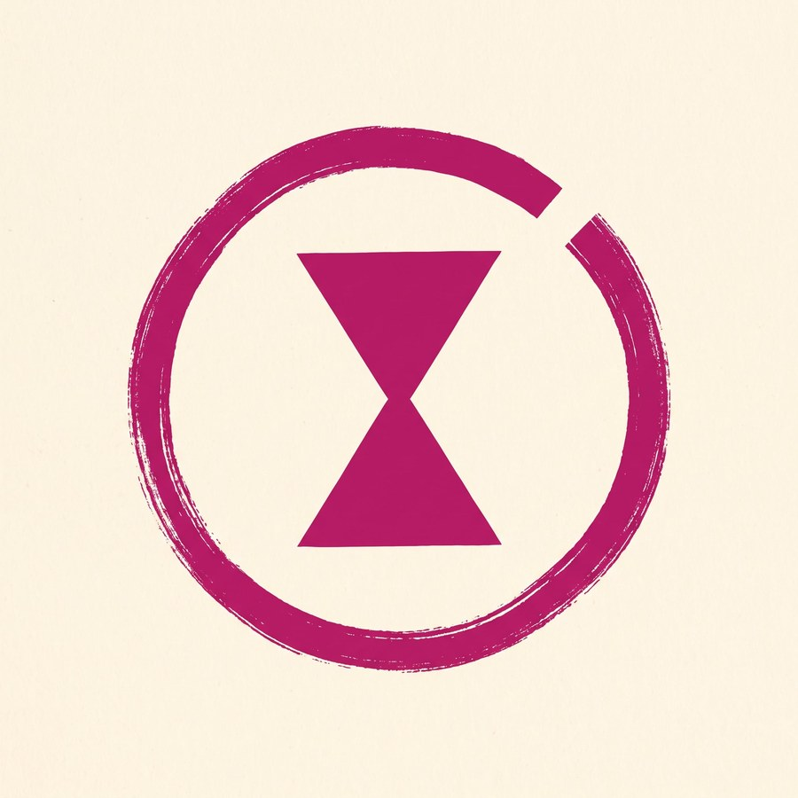
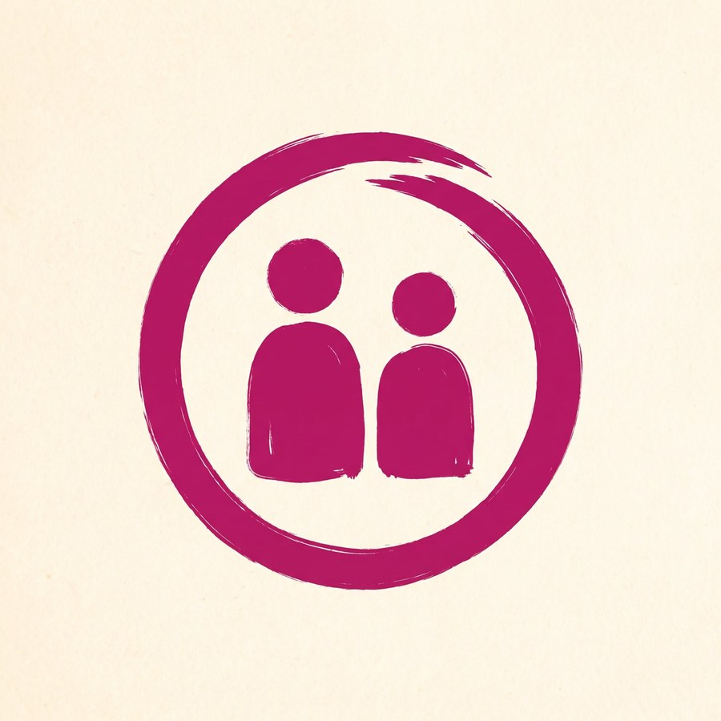
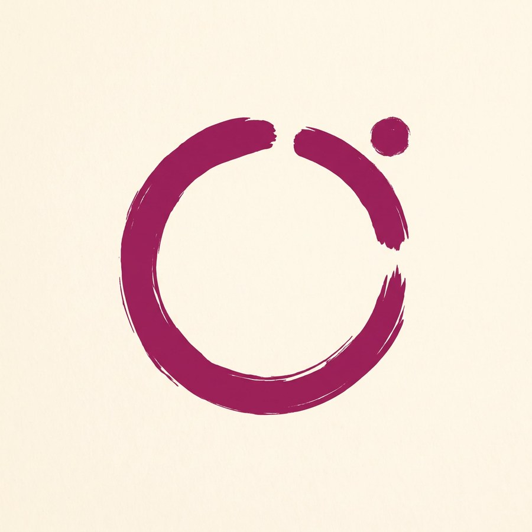
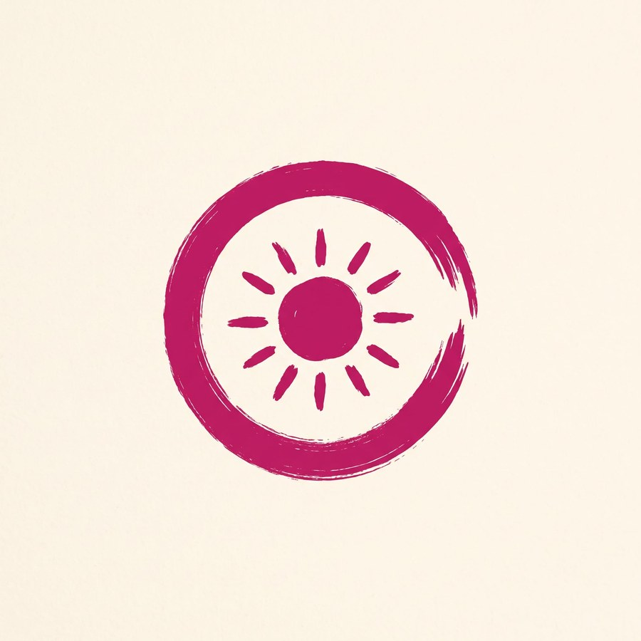
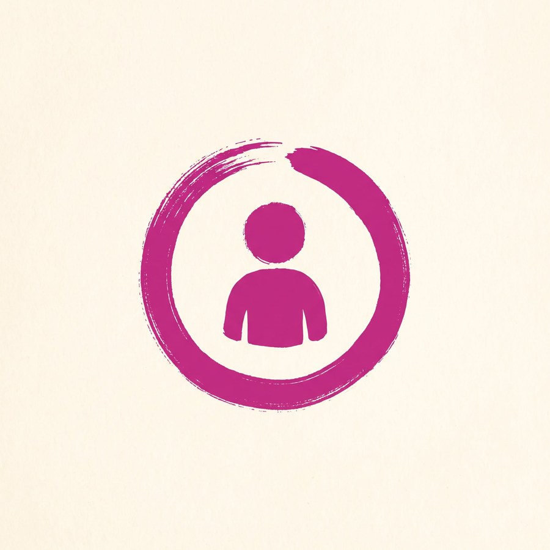
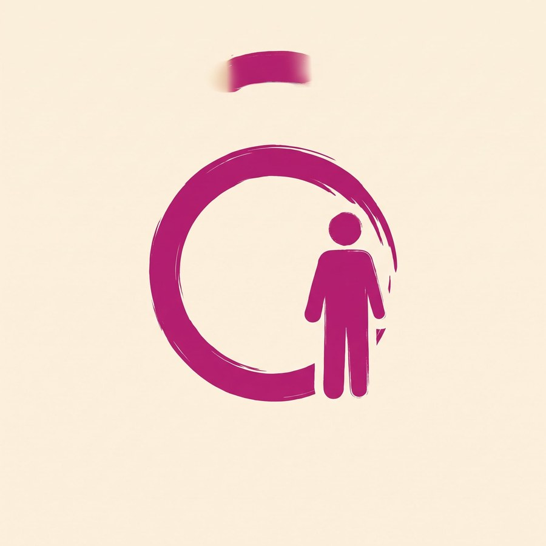

03
Sulla vetrina

Sull'adesivo il cerchio pieno funziona meglio di quello vuoto: da lontano si vede una forma, non un anello.
Marchio · dentro il cerchio
Il cerchio con il pezzo che rientra è la strada giusta, ma da solo resta troppo vuoto. Sei modi di riempirlo, comprese le tre cose che avevi in mente.
Attenzione a una trappola: omino dentro un cerchio è l'icona universale del profilo utente. Se lo mettiamo, va reso specifico, altrimenti il marchio diventa il pulsante "account" di qualunque sito.
01

Dice: manca qualcuno, e il tempo stringe.

Dice: due parti che si incontrano dentro un cerchio che si chiude.

Dice: il pezzo che manca al cerchio è proprio una persona.

Dice: isola, luce, stagione.

Dice: profilo utente.

Dice: qualcuno entra nel posto lasciato libero.
02
È la prova che separa un marchio da un disegno. Guarda le ultime due colonne.
Clessidra
Due persone
Il pezzo è la persona
03
Sull'adesivo il cerchio pieno funziona meglio di quello vuoto: da lontano si vede una forma, non un anello.
04
Temevo che due concetti sovrapposti si annullassero, e invece qui si sommano: il cerchio aperto dice che manca qualcuno, la clessidra dice che il tempo stringe. Sono la stessa frase detta due volte — che è esattamente la situazione di un locale alle undici del mattino.
Sulla persona avevi ragione in linea di principio, ma la resa lo smentisce: al centro diventa l'icona "account", a corpo intero diventa segnaletica. L'unica versione che funziona è quella in cui la persona è il pezzo mancante — elegante, però lascia il centro vuoto.
Se invece ti resta il desiderio della figura umana, la seconda scelta è due persone: perde in longevità e leggibilità, ma il messaggio dell'incontro arriva a chiunque senza spiegazioni.